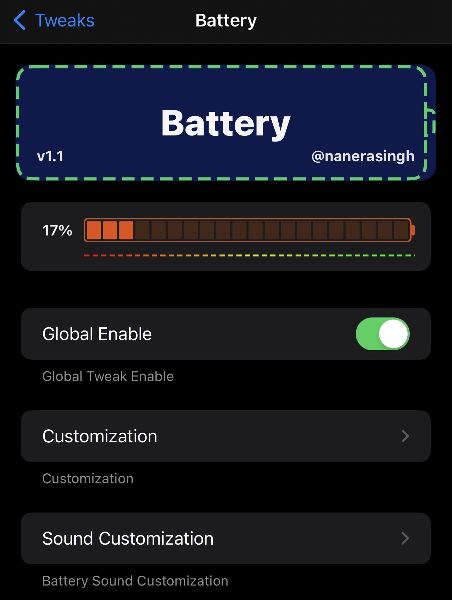
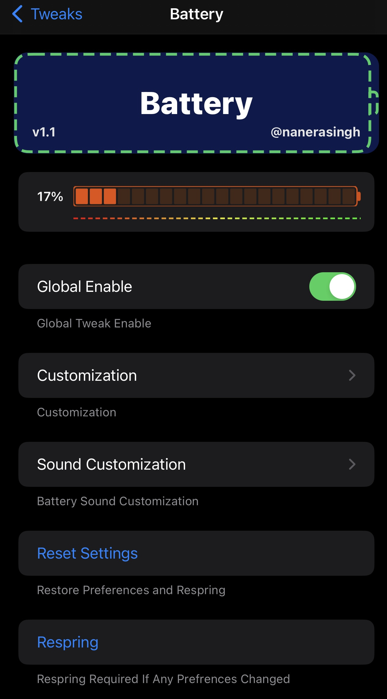
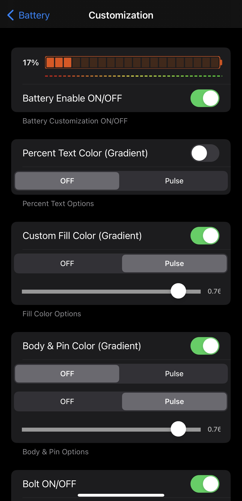

Battery Pulse & Other Customisations.
Note:libimagepicker, libcolorpicker must need installed.
Battery Tweaking
-Fill pulse
-Body Pulse
-Bolt Pulse
Short Video maybe coming with Release post



ver1.2:Bugs Fixes.Some features added
Nanerasingh Repo
If you enjoy this tweak, consider supporting future updates and development!